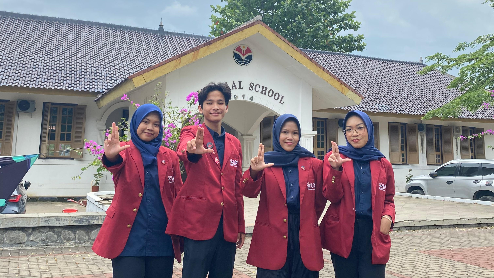
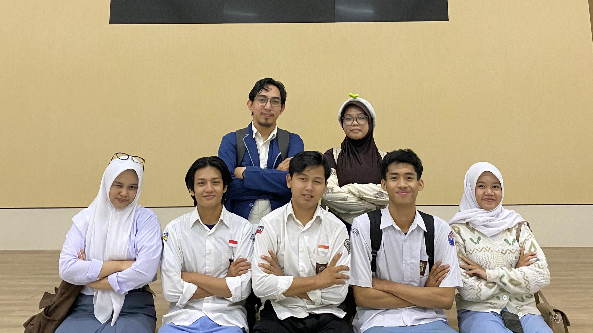
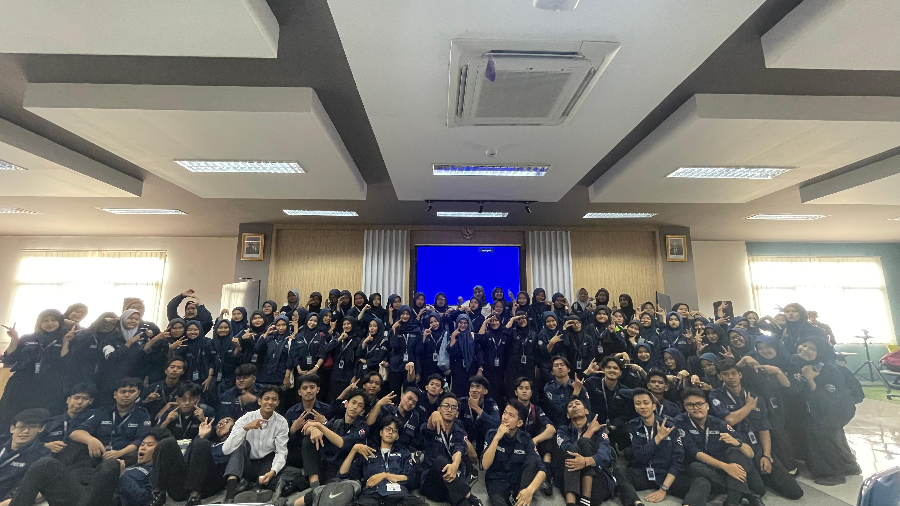
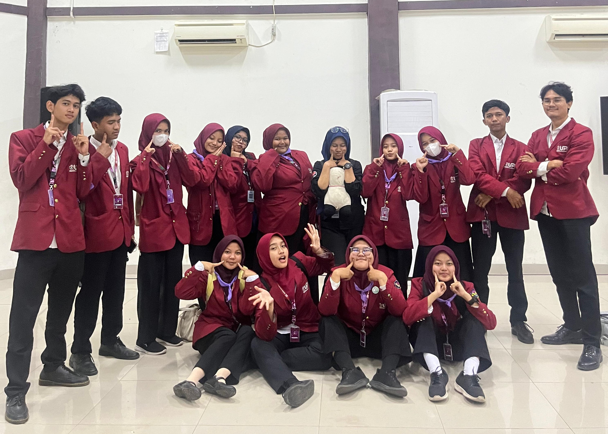

Tentang Saya
Hai! Saya Zaskia Alya Fadilah, seorang mahasiswi dari Pendidikan Sistem dan Teknologi Informasi, Universitas Pendidikan Indonesia, asal Cirebon. Saya memiliki minat besar di bidang web development dan desain grafis, dan saat ini
sedang fokus mengasah skill teknis untuk menciptakan solusi digital yang menarik dan fungsional.
Di luar akademik, saya juga aktif di organisasi kampus. Bagi saya, kampus bukan hanya tempat kuliah, tetapi juga wadah terbaik untuk mengasah skill kepemimpinan dan kerja tim. Melalui kegiatan ini, saya belajar langsung tentang
proses pengambilan keputusan cepat, hingga bagaimana cara mengawal proyek sampai tuntas. Saya sangat menjunjung tinggi kolaborasi tim; karena itu, saya selalu memastikan diri saya menjadi anggota tim yang proaktif, suportif, dan bisa
diandalkan. Di website ini, Anda bisa melihat kegiatan dan aktivitas yang saya ikuti. Mari terhubung dan berkolaborasi!
Aktivitas Saya
Staf Komisi I Badan Legislatif HIMA PSTI Kabinet Aksaracita
 Saya berperan sebagai Staf Komisi I Badan Legislatif HIMA PSTI Kabinet Aksaracita. Dalam peran ini, saya mengawasi departemen Pengembangan Sumber daya Organisasi (PSDO).
Ketua Dewan Pengawas Regenerasi dan Orientasi Mahasiswa PSTI (ROTASI) 2025
Saya berperan aktif sebagai Ketua Dewan Pengawas Rotasi 2025, sebuah kegiatan orientasi mahasiswa jurusan PSTI. Tugas utama saya adalah mengawasi seluruh jalannya acara, mulai dari persiapan hingga evaluasi, untuk memastikan setiap aspek kegiatan terlaksana dengan tertib dan terstruktur demi tercapainya tujuan yang efektif.
Staf Pengawas Medis MOKA-KU UPI Purwakarta 2025
Selama kegiatan Mokaku UPI Purwakarta 2025, saya aktif sebagai Staf Pengawas Medis. Mokaku sendiri merupakan masa orientasi bagi mahasiswa baru yang diadakan setiap tahun oleh Universitas Pendidikan Indonesia, di mana saya bertanggung jawab mengawasi divisi Medis dalam memastikan aspek kesehatan dan keselamatan seluruh peserta.
Pengawas Rescuer MIKASI ESTIFEST 2025

Mengawasi divisi Rescuer pada MIKASI ESTIFEST 2025, sebuah acara tahunan yang diadakan oleh Himpunan Mahasiswa PSTI. Tugas saya adalah memastikan bahwa semua prosedur keselamatan diikuti dan memberikan dukungan kepada tim medis jika diperlukan.
Paduan Suara RESITAL KUBUS 2025

Saya berpartisipasi sebagai anggota Paduan Suara dalam RESITAL KUBUS 2025, sebuah acara seni yang menampilkan bakat musik mahasiswa. Saya berkontribusi dalam setiap persiapan untuk menyajikan penampilan yang menarik.
Pengawas Publikasi Desain Dokumentasi Sosial Projek (SOSPRO)

Sebagai Pengawas Publikasi Desain Dokumentasi dalam Projek Sosial (SOSPRO), saya bertanggung jawab memastikan bahwa semua materi publikasi dan dokumentasi acara dirancang dan disebarluaskan dengan baik. Tugas saya meliputi pengawasan proses kreatif serta koordinasi dengan tim untuk mencapai hasil yang efektif dan menarik.
Staf Divisi Acara Aksara Bicara

Saya berkontribusi sebagai Staf Divisi Acara pada Aksara Bicara, sebuah inisiatif untuk meningkatkan literasi dan apresiasi sastra. Tugas utama saya meliputi perancangan konsep acara dan manajemen waktu. Salah satu acara yang saya kelola adalah sesi bedah buku "Ternyata Tanpamu" bersama penulisnya, Natasha Rizky. Saya berkolaborasi dengan tim untuk memastikan setiap detail acara berjalan lancar dan efektif.
Studi Banding HIMA PSTI UPI X HIMALKOM IPB

Saya berpartisipasi dalam Studi Banding HIMA PSTI UPI ke HIMALKOM IPB. Melalui kegiatan ini, saya belajar tentang perbedaan kurikulum dan metode pengajaran, serta berdiskusi langsung dengan pengurus HIMALKOM IPB mengenai pengelolaan organisasi kemahasiswaan. Pengalaman ini sangat memperluas wawasan saya.
Kunjungan Industri Indosat Marvelous Xperience Center

Saya mengikuti Kunjungan Industri ke Indosat Marvelous Xperience Center, di mana saya mendapatkan wawasan mendalam tentang teknologi komunikasi dan inovasi digital. Kunjungan ini memberikan saya kesempatan untuk belajar langsung dari para profesional di industri, memperluas pengetahuan saya tentang tren terbaru, serta memahami bagaimana teori yang saya pelajari di kampus diterapkan dalam praktik nyata.
dan masih banyak lagi di masa depan...